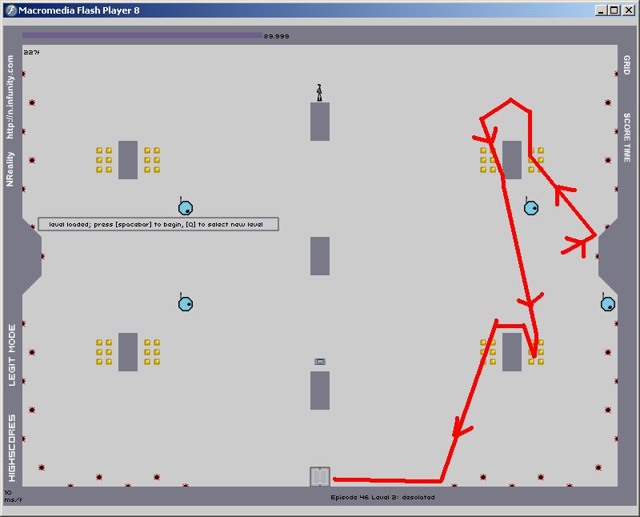

Have an innovation you can't pull off? Post it here! Highscore and speedrun both allowed!
I'll start out with my 10-4 innovation
I'll start out with my 10-4 innovation
I think TheRealOne has many innovations.
81-2 speedrun (see n-reality demo) It is possible to use the last corner jump to get to the left side but I haven't pulled it off yet (yes, my run had enough speed but I misjudged at the time and went to the right). That should be enough for 0th.Sweet mother of tewl!! Those are some nice innovations
91-1 speedrun (n-reality demo) Self explanatory.


Yeah, golfkid's right, it just leads to destruction.
If you wait a while, whats the point of doing it? You just end up at the same point at the same time. The only possible reason I can see for doing that would be to add style points to the run.
Edit: if there was sarcasm there, I completely missed it.


Yeah, it is faster. I mentioned it on irc. It's insanely difficult though so I haven't even attempted it.
Yeah, it is faster. I mentioned it on irc. It's insanely difficult though so I haven't even attempted it.will it be easier if you slide & slow down a bit at the upper block?